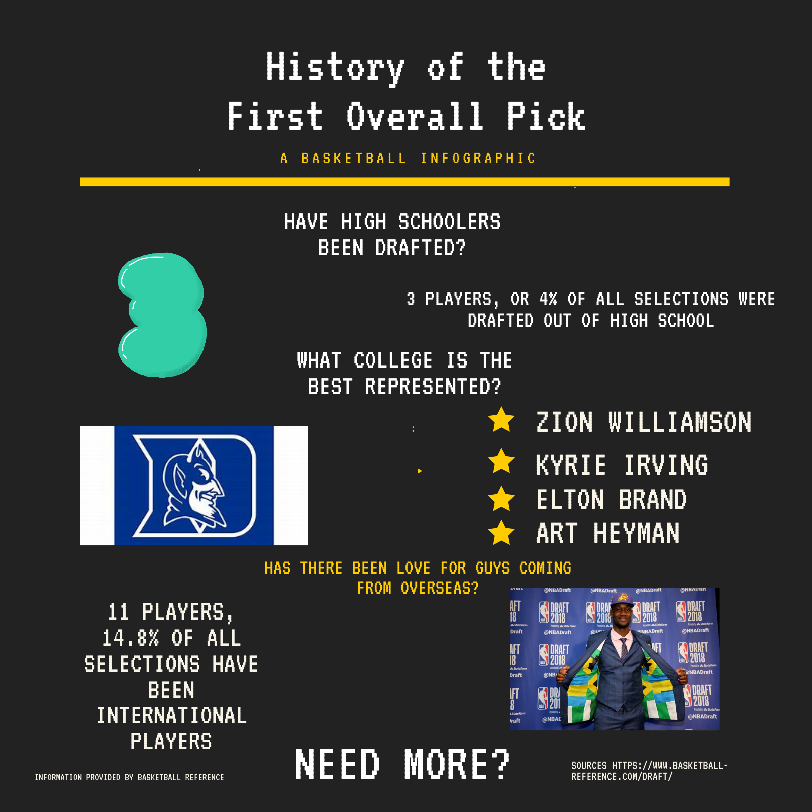

By James Baldo
May 6,2021
The NBA draft is the beginning for teams looking to right the ship with the opportunty to draft the best prospect entering the league, but the likelihood that the player picked ends up bring the franchise to glory is not as favorable as one would think.
There have been 74 players that have been selected number one overall in the NBA draft in the league’s history. The latest being Anthony Edwards, an 18 year-old, who tore up college basketball during his first and only year at the University of Georgia.
However, drafting number one overall does not necessarily mean you are going to get a guy like Anthony Edwards, or even the 2003 NBA Draft’s first overall player: Lebron James. Statistics will validate this claim. Of the 74 players selected first overall, only 36.5% (27 players) have been nominated at least once as an NBA All-Star, and only 24.3% (18 players) have been inducted into the basketball hall of fame, two milestones that signify a player's prowess among the league at his time.
Tommy Sheppard, the current General Manager of the Washington Wizards, has been in the NBA for 26 years, working with the likes of Kwame Brown and John Wall. Sheppard says, "The draft is not the final destination, it is the first step, going no. 1 starts a journey often filled with twists and turns that sometimes are out of the player’s control." Sheppard says going first doesn't guarantee the hall of fame and that manging expectations is ciritical since one player can't carry a whole frnachise, "Every pick has a very personal story of their career for sure."
The stereotype that the top player selected in the NBA Draft lottery goes on to have a long career is also not entirely true. Kareem Abdul-Jabbar had the longest career of those drafted first overall, with a career that lasted 20 seasons, however the career average for the number one overall pick is 9.9 seasons, about half of Jabbar’s. There have even been two players: Clifton McNeely and Gene Melchiorre who never suited up for a single game after being selected as the top overall pick. McNeely was the first player ever in NBA history to be selected as the first pick in the 1947 NBA draft, while Melchiorre was selected in 1951.
So on July 29 at the NBA 2021 draft, for those watching and those hyping up the likes of Cade Cunningham, Jalen Suggs and Evan Mobley, understand that whoever is selected first may not be the guaranteed slam dunk teams are looking for to rejuvenate their franchise. "You identify players that check all of these areas, hope that one is available when you are up to pick and then you must provide the environment, resources for that player to succeed," Sheppard says. Now, let’s look at three players drafted in the last 20 years that were selected first overall in the NBA draft that never lived up to their expectations.
Player names were collected from The Basketball Reference Website.
Statistics were calculated manually. The data for all the statistics were gathered from The NBA Official Website.
All Rights Reserved to the Scoop to my Lou Publication.